EL ARTE DEL DETALLE
Un recorrido visual por los procesos, texturas y momentos que nos definen
El Rincón de la Tradición
Hechas a mano, al comal y con el auténtico sabor que nos une
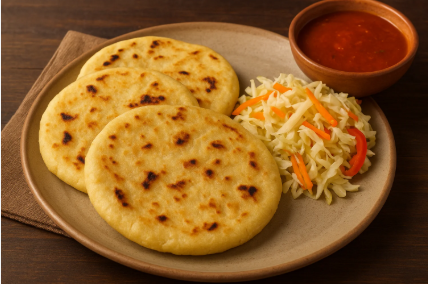
Pupusa de queso
Rellena únicamente de queso derretido. Es sencilla, suave y favorita de quienes prefieren sabores clásicos.

Pupusa de frijol con queso
Combina frijoles refritos con queso. Tiene un sabor cremoso y ligeramente ahumado.
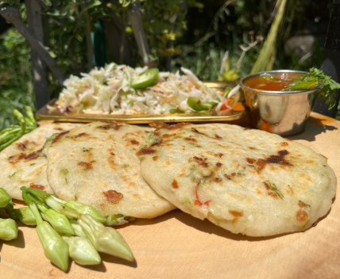
Pupusa de loroco con queso
Lleva loroco, una flor comestible muy usada en la cocina salvadoreña, mezclada con queso. Tiene un aroma único y un sabor floral característico.
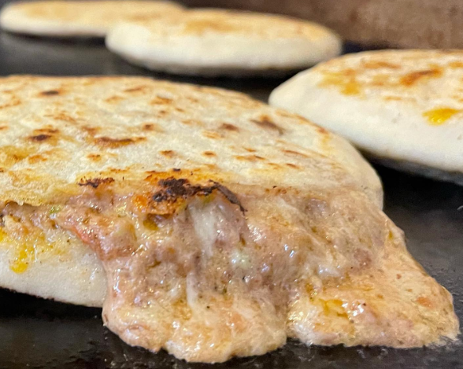
Pupusa revuelta
La más popular en El Salvador. Lleva una mezcla de queso, frijoles y chicharrón molido. Tiene un sabor balanceado y muy tradicional.

Pupusa de chicharrón
Rellena de chicharrón de cerdo molido y sazonado. Suele tener un sabor más intenso y salado.
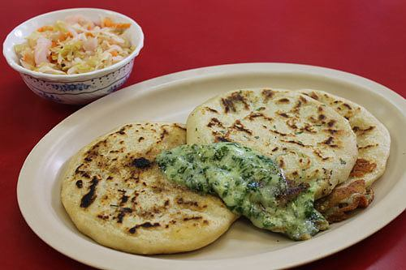
Pupusa de ayote
Preparada con ayote cocido y condimentado. Es una opción tradicional con un toque dulce y suave.
Nuestras Especialidades
Cada plato cuenta una historia de tradición, fuego y sabor
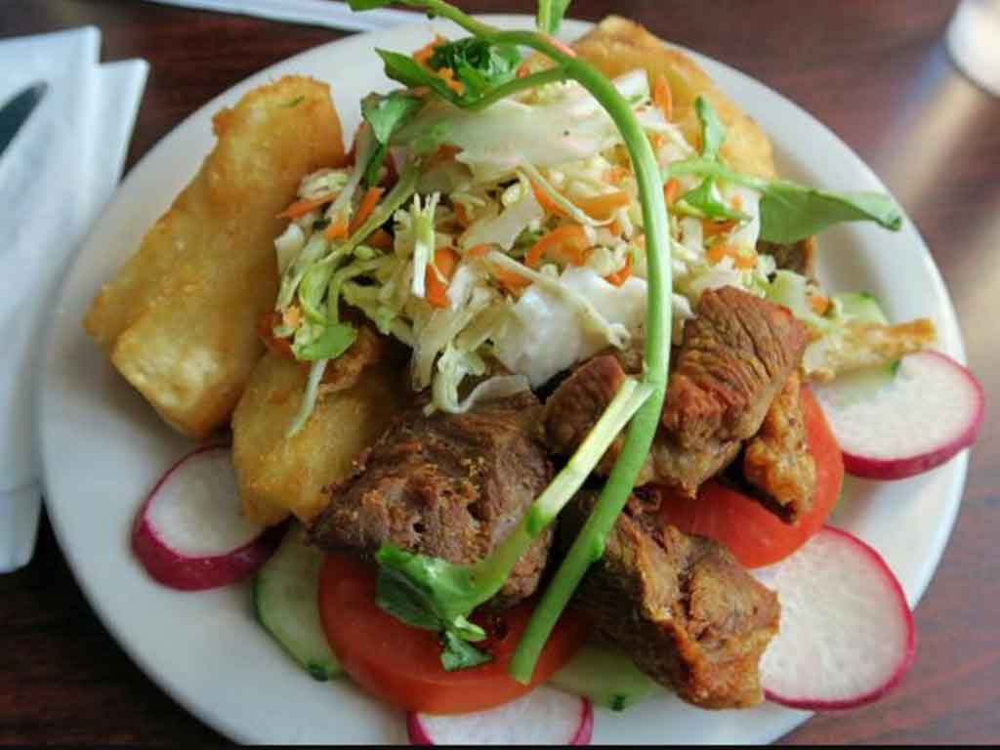
Yuca frita con chicharrón
Crujiente y deliciosa yuca frita acompañada de chicharrón, curtido fresco y salsa casera tradicional salvadoreña.
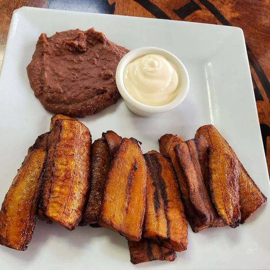
Plátanos fritos con crema y frijoles
Dulces plátanos fritos servidos con crema fresca y frijoles refritos al estilo casero.
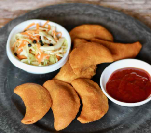
Pastelitos
Tortillas rellenas de carne o pollo sazonado, fritas hasta quedar doradas y acompañadas de curtido y salsa.
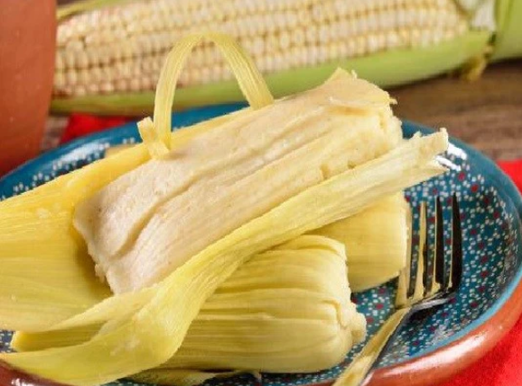
Tamales de elote
Suave y dulce tamal elaborado con elote fresco molido y cocido al vapor en hoja tradicional, con auténtico sabor casero salvadoreño.
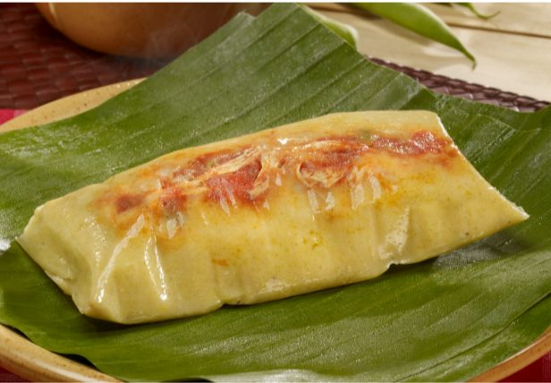
Tamales de pollo
Tradicional tamal salvadoreño relleno de pollo sazonado y masa suave, envuelto en hoja y cocido lentamente al estilo casero.
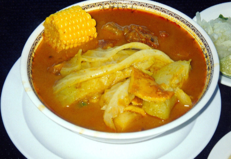
Sopa de pata
Reconfortante sopa típica elaborada con verduras frescas y carnes cocidas lentamente con sazón casera.
Para Acompañar
Refrescantes opciones naturales y tradicionales preparadas al momento

Horchata
Se prepara con morro, arroz y especias como canela y vainilla.
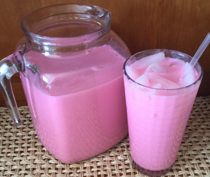
Cebada
Refresco frío preparado con cebada tostada y canela.
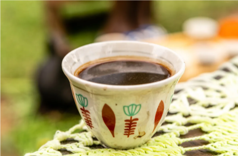
Café salvadoreño
Café de altura del país reconocido internacionalmente, especialmente de zonas como Apaneca-Ilamatepec.
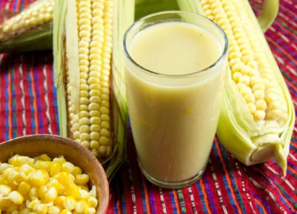
Atol de elote
Bebida caliente hecha de maíz tierno molido.
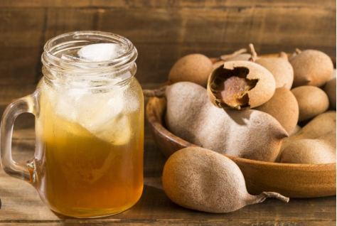
Tamarindo
Refresco natural hecho con pulpa de tamarindo.
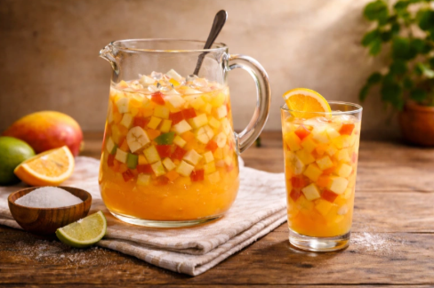
Ensalada
Bebida dulce con frutas picadas como manzana, marañón y piña.
El Sabor se Vive Aquí
Disfruta de un ambiente tranquilo y lleno de tradición salvadoreña
En este restaurante pupusero se vive un ambiente tranquilo y familiar desde que se entra. Su estilo sencillo y acogedor, junto con el aroma de las pupusas recién hechas, crea una sensación agradable y cercana. El sonido del comal y el trato amable del personal hacen del lugar un espacio ideal para compartir en familia o con amigos. La atención es rápida y cordial, lo que hace que la experiencia sea aún más cómoda para los clientes. Además, los ingredientes frescos y el sazón casero se notan en cada bocado, invitando a regresar.

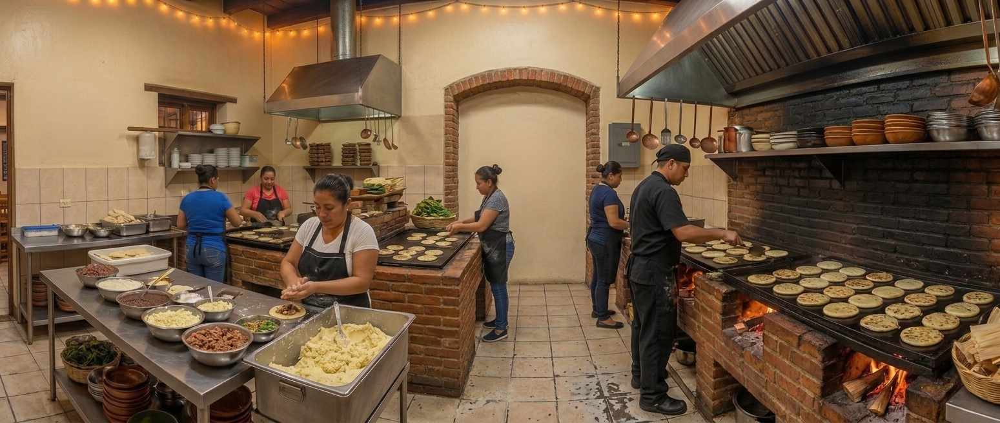
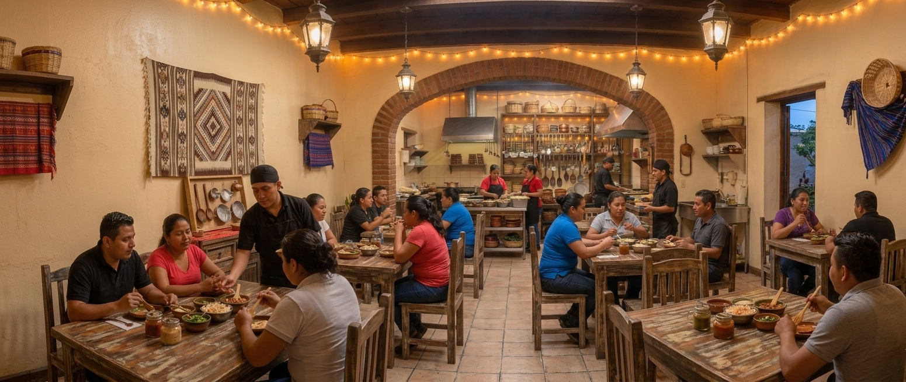